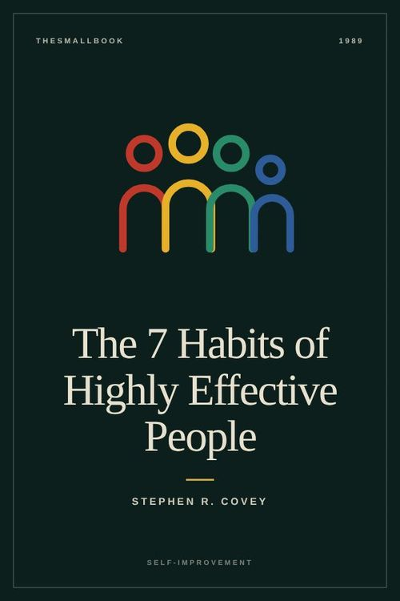

Library › Authors › Stephen R. Covey
Books by Stephen R. Covey
Stephen R. Covey has one book in the library. Every book here is read down to the big idea, the lessons, the lines worth keeping and the actions worth taking. Start with the summary, then buy the full book if it earns a place on your shelf.

The 7 Habits of Highly Effective People
1989 · 9 min · 7 lessons
Effectiveness isn't a technique - it's character. Win the private battle first, then the public one.
Covey's research into 200 years of success literature found a shift: early writings focused on character (integrity, humility, courage); modern ones on personality tricks (techniques, image, quick fixes). His framework restores the deeper path - an inside-out progression: Habits 1-3 build the Private Victory (self-mastery: proactivity, vision, priorities), Habits 4-6 the Public Victory (win-win, empathic listening, synergy), and Habit 7 renews the whole system. True effectiveness balances P/PC: production AND the...
Lessons in the summary
- Habit 1: Be Proactive
- Habit 2: Begin With the End in Mind
- Habit 3: Put First Things First
- The Emotional Bank Account & Habit 4: Think Win/Win
- Habit 5: Seek First to Understand, Then to Be Understood
- Habit 6: Synergize
- Habit 7: Sharpen the Saw
Lines worth keeping
- Between stimulus and response there is a space. In that space is our power to choose.
- Begin with the end in mind.
- Seek first to understand, then to be understood.
Questions Stephen R. Covey helps answer
Read nearby authors next
- Amish Tripathi 6 books
- Robin Sharma 5 books
- A.P.J. Abdul Kalam 4 books
- Adam Grant 4 books
- Cal Newport 4 books
- Chetan Bhagat 4 books
- Jonathan Haidt 3 books
- Ryan Holiday 3 books
Questions Stephen R. Covey helps answer
Where should I start with Stephen R. Covey? Start with The 7 Habits of Highly Effective People: Effectiveness isn't a technique - it's character. Win the private battle first, then the public one.